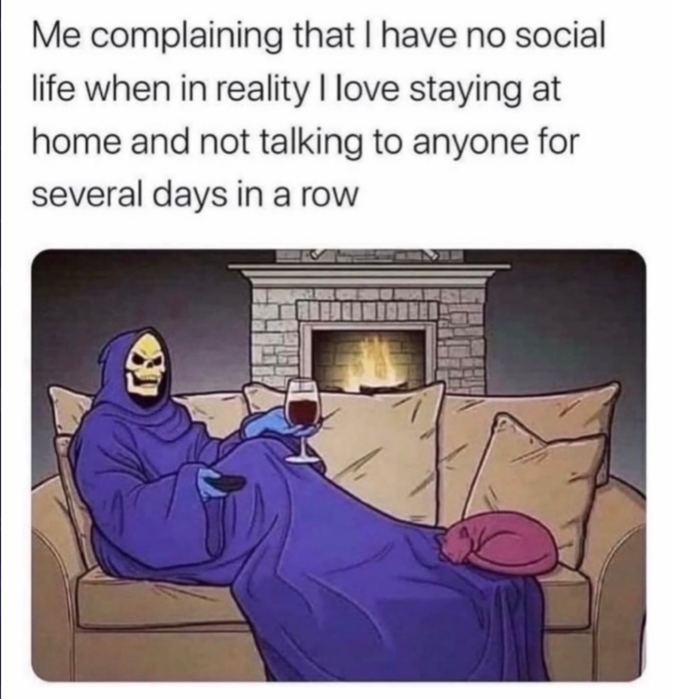
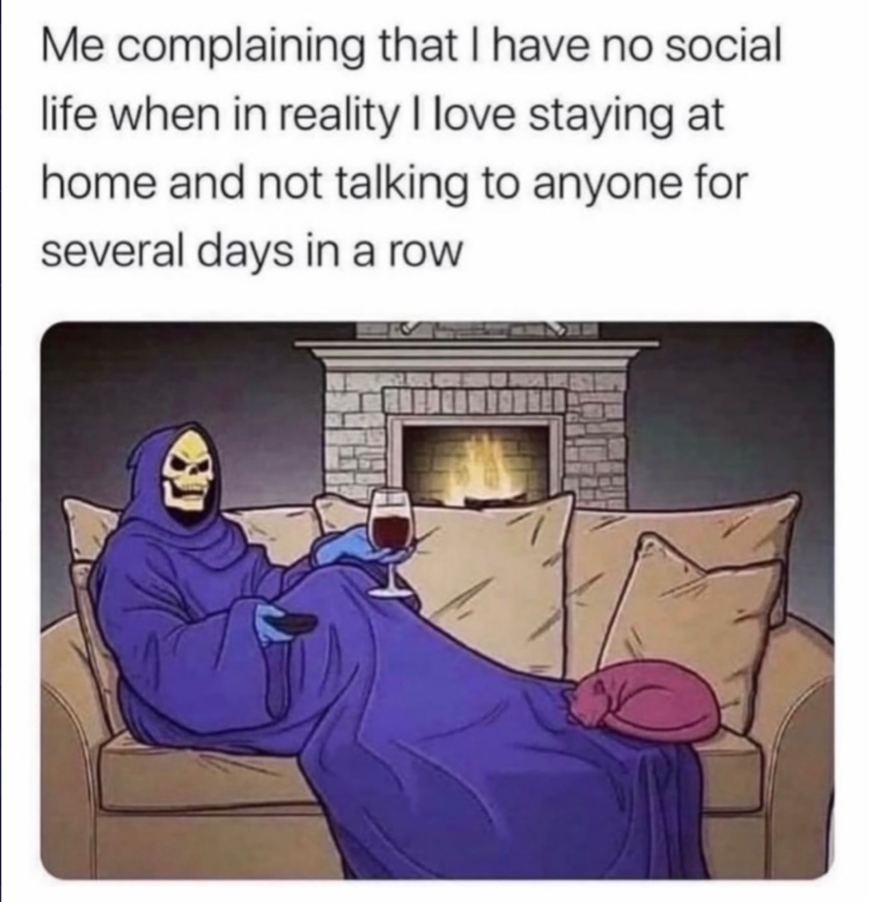

enjoy these social media pieces
i skip Instagram stories too fast and end up voting on things by accident so sorry if i said your cat was ugly
— Xavier (@xavierofficials) October 9, 2022
i skip Instagram stories too fast and end up voting on things by accident so sorry if i said your cat was ugly
— Xavier (@xavierofficials) October 9, 2022
From the very beginning, this blog attracted my eye because of the colors of the webpage. Most importantly, the front and center piece by Javier Morales was my favorite piece of this website. It inspired this webpage you are visiting now. I am fascinated with the early computer screens and interfaces. I liked how the artpiece by Morales took an ordinary vintage screen and added slime and a glitchy computer screen. My creative idea was to recreate that artpiece and make it interactive.